世界のどこかに生まれ、6歳から25歳までを歩く——お金と選択肢の人生ゲーム
街頭で「世界の遺児に教育を」と言うとき、その一言の後ろにある現実を、25分で一度通しておく
同じ「学校に行く」でも、そこに至るまでが違う。
この差が、そのままゲームの数字になっています。
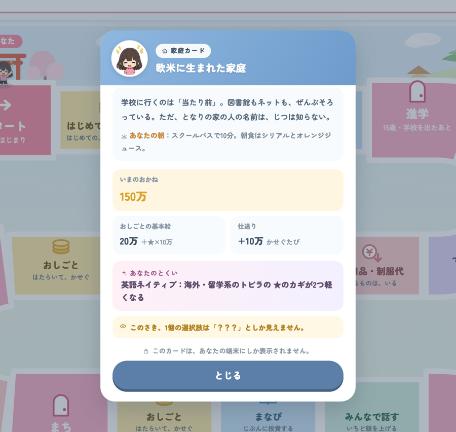
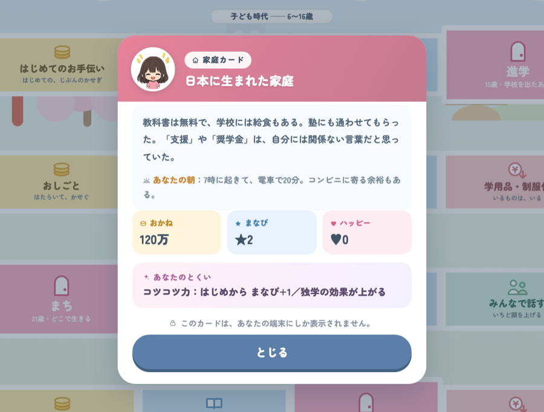
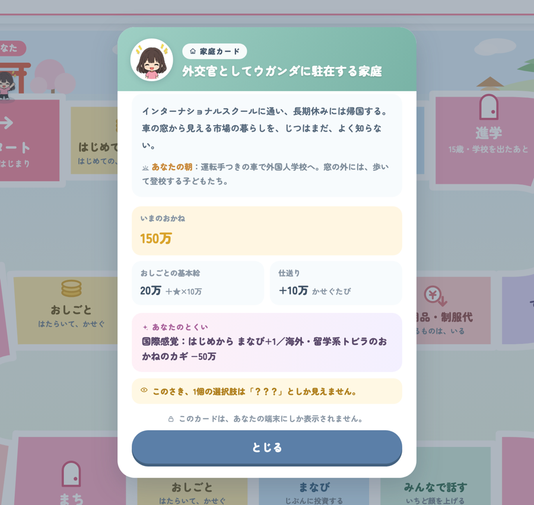
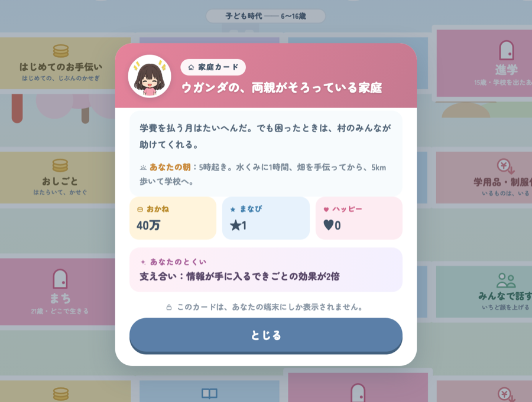
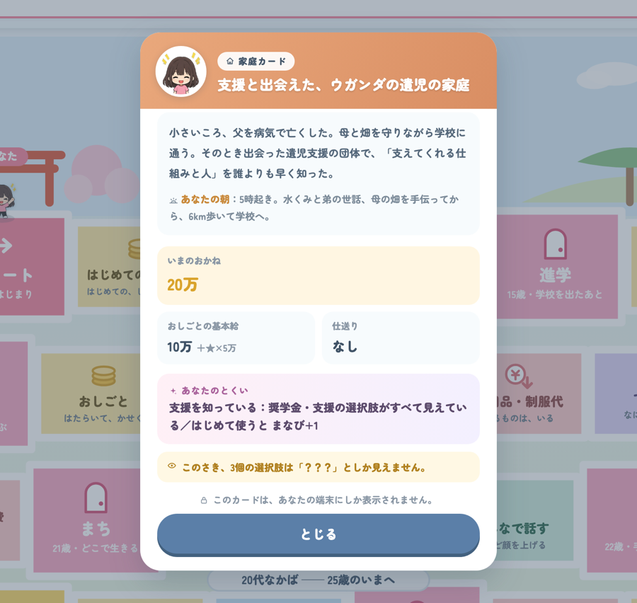
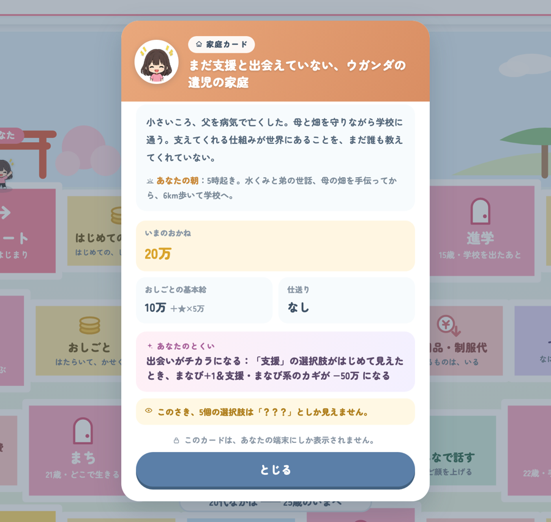
ウガンダ育ちは★1つが5万、それ以外は10万——同じ学びでも、実り方が違う。
下の2枚は数字がまったく同じで、違うのは支援を知っているかどうかだけ。
どのチームにも、ウガンダの遺児の家庭が必ず1人入ります。
その人に何が見えていて、何が見えていなかったか——
ゲームが終わったら、全員で答え合わせをします。
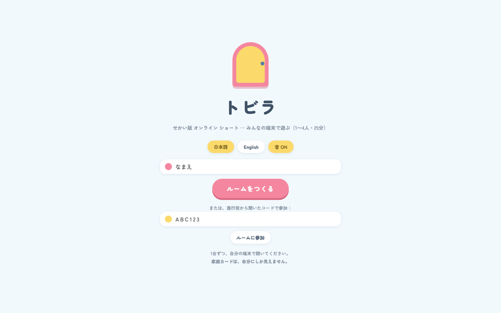
つながらない場合は手を挙げてください
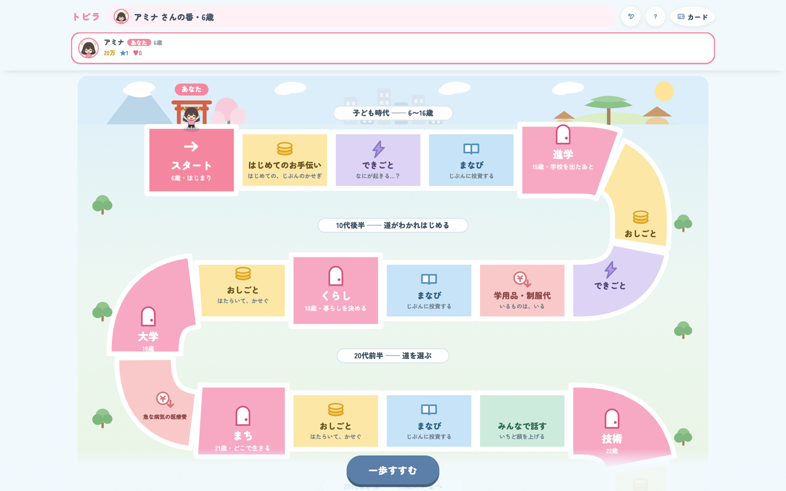
15歳まではサイコロなしで1マスずつ——人生の土台をつくる期間。
15歳の進学のトビラからサイコロが始まります。
止まったマスの指示に従い、OKを押すと次の人の番になります
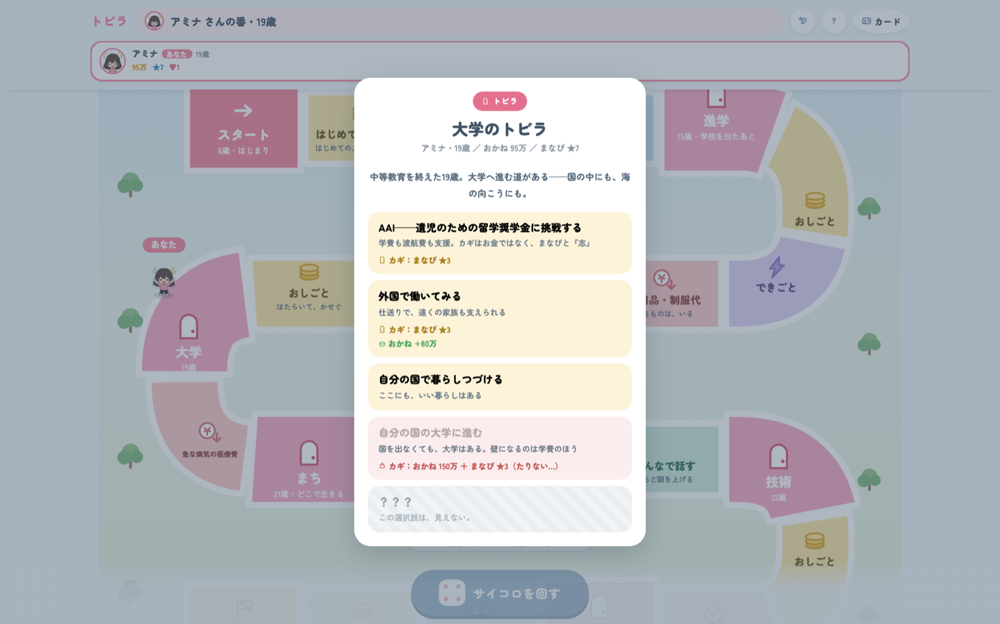
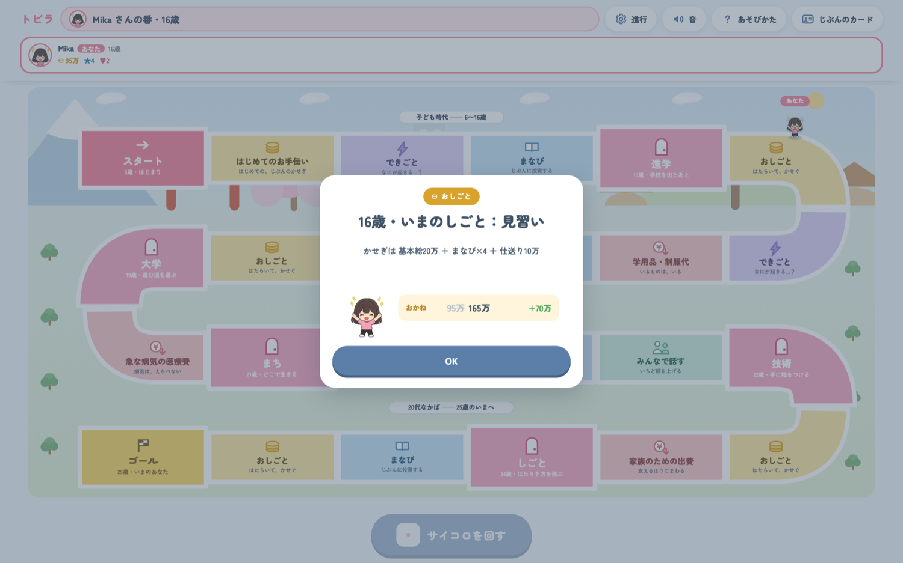
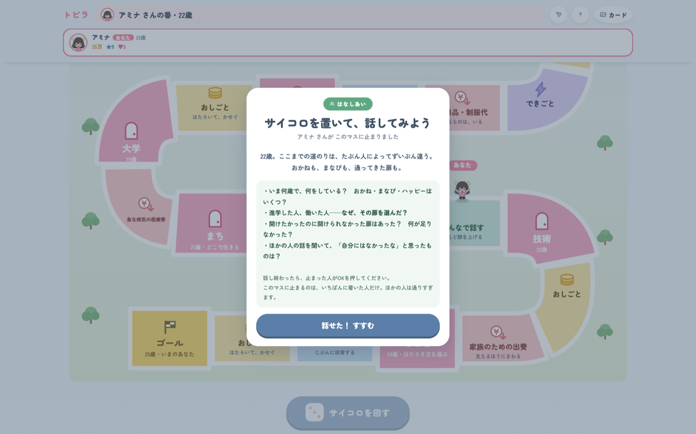
ゲームを止めて、チームで話す時間。数字は変わりません。
いちばんにここへ着いた人が止まり、ほかの人は通りすぎます。
「奨学金・支援団体の力で進学」は貸与型（総額48万）。働くたびに−6万ずつ返し続けます。25歳では返し終わりません
支援の存在を知っている人は、返済不要の奨学金に出会えることもある。「知っていること」自体が力になる
順位を決めるのは、お金ではなく♥ハッピーの数＝人生の選択肢を多く持ち、自分の意思で選べた回数
おかねと★まなびは、♥を得るための「カギ」。目的ではなく手段です
— 記入 —
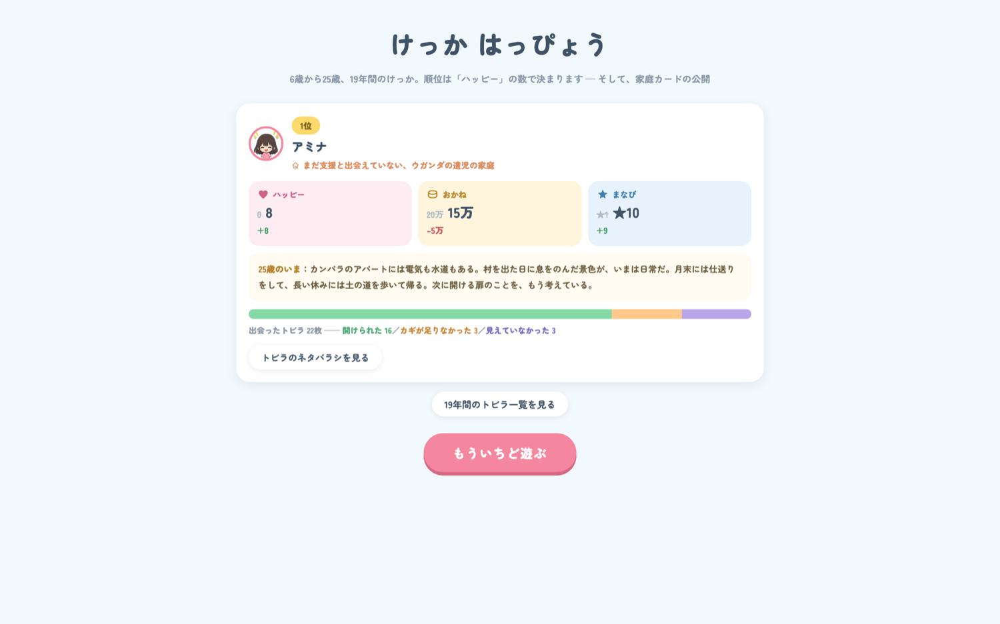
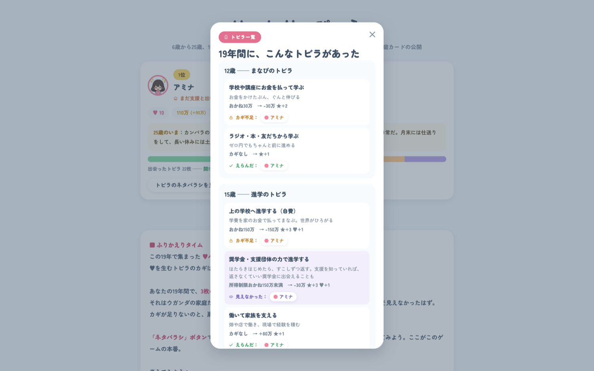
各自の「ネタバラシ」を開くと、19年間の扉が全部ならびます。
えらんだ
開けられた
カギ不足
見えてなかった
紫の行が、ゲーム中「？？？」だったもの。本当は何だったのかが、ここで初めて分かります。
同じ「おしごとマス」・同じ★の数なのに、
かせぎがぜんぜんちがった。
それは本人の努力のちがいだろうか？
手元の結果画面の「おかね」を見くらべながら
ウガンダ育ちは、★を増やすだけでは
かせぎが伸びなかった。
「まなび」が実るために必要だった
もうひとつのカギは何だった？
家庭カードの「基本給＋★×掛け率」を思い出しながら
あなたの家庭カードから見えなかったのは、
どんなトビラだった？
逆に、見えていた強みは？
トビラ一覧の紫の行を、おたがいに見せあって
親を亡くしたウガンダの子には、
何が「見えて」いた？
それはなぜだろう？
遺児のカードだった人に、トビラ一覧を見せてもらいながら
AAIの扉は「ずるい」？
——その扉には「志」の約束がついていた。
25歳のいま、その人はどこで何をしていた？
AAIを選んだ人がいたら、「25歳のいま」を読んでもらおう
今日あなたが持ってきたもの——
スマホ、無料の教科書、給食。
それは、どの家庭カードの世界のものだった？
「3つの世界の朝」を思い出しながら
日本にいる私たちが、
世界の遺児にわたせる「カギ」って、
何だろう？
正解はありません。話したくないことは話さなくて大丈夫です
そしてその差は、次の世代の「生まれの差」へ——。
ゲームで見た「？？？」も「カギ不足」も、いまの世界に実在します。
この連鎖は、本人の努力だけでは断ち切れない。だから世界には、遺児を支える仕組みと人がいる
あしなが育英会は「あしながウガンダ」で、現地の遺児の教育を実際に支えている——ゲームに出てきた支援団体のモデル
AAIは、アフリカの遺児を海外の大学へ送り出す奨学金。カギはお金ではなく、まなびと「志」——祖国に貢献するリーダーを育てる「約束」の仕組み
そして、その入り口に立っているのが——いま街頭に立っている、みなさんです
このゲームは、まだ完成していません。
今日みなさんが感じた引っかかりが、そのまま改善点になります。
数字のバランス、扉の選択肢、エンディングの文章——
「ここは違うと思う」を、遠慮なく。
今日いちばん心に残った場面。
自分のカードを見たときのこと、他の人のカードを知ったときのこと。
街頭に立つときの言葉が、ひとつでも変わったなら——それを聞かせてください。
あなたの前にも、世界のどこかの子の前にも、
まだ見ぬトビラがたくさんある。